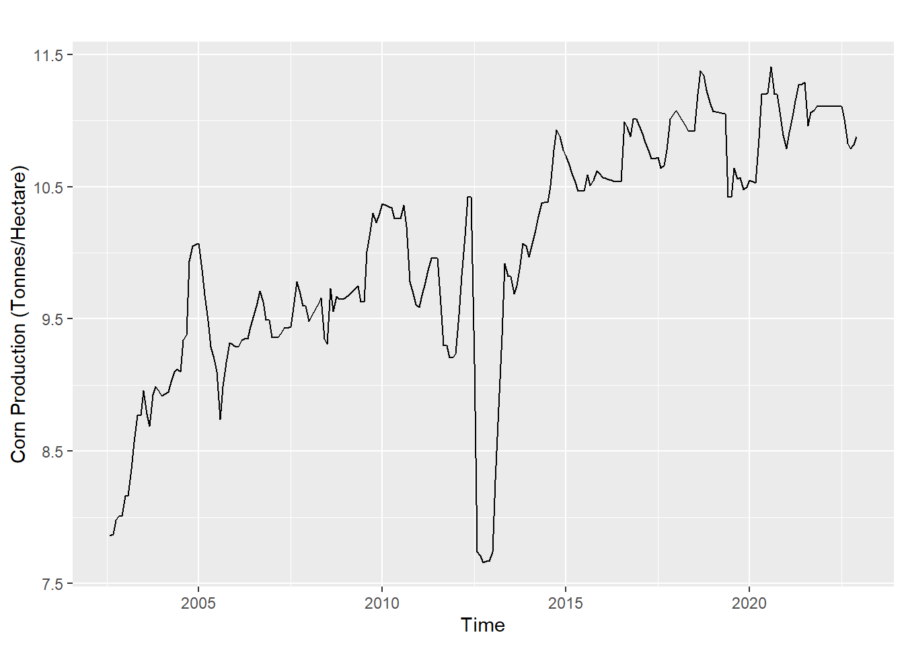
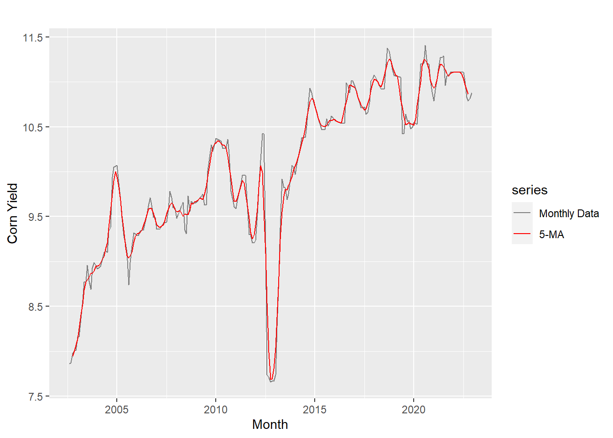
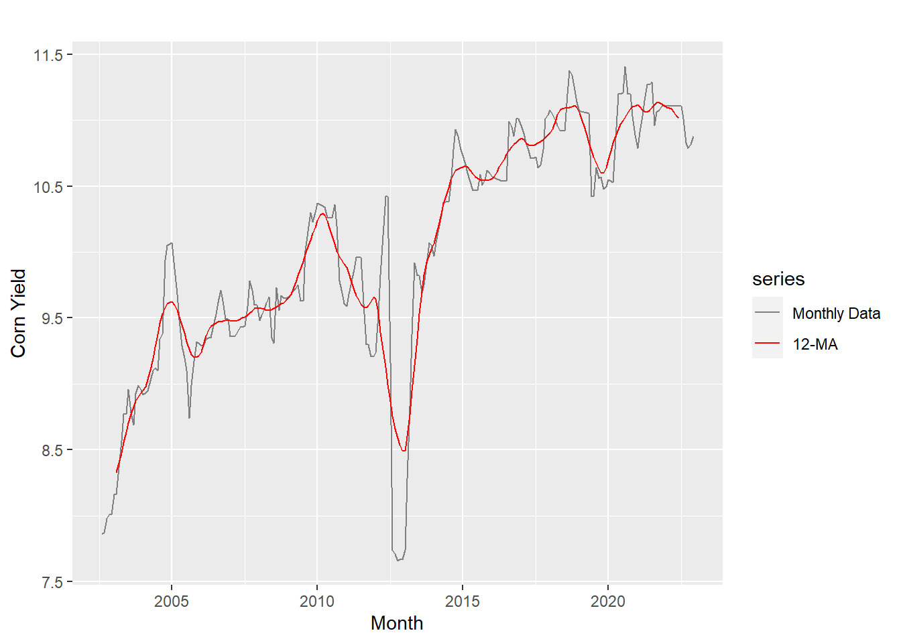

Exploratory Data Analysis
The exploratory data analysis part will focus on finding the time series components of the yields data.
Crop Production Data
In this example, I will use the monthly yield of wheat to show the time series plot, and the time series components, such as the trend, seasonality and stationarity, etc.
First, read in the data, and replace the NA values. I choose to fix them with linear interpolation.
Code
cp = read.csv("./HW2/Monthly_Data.csv")
wheat_usa = cp[cp$Crop=="Wheat",]
colnames(wheat_usa)[4] = c("Yield")
wheat_usa$Yield = na.approx(wheat_usa$Yield)Then, a time series plot of the wheat production data is shown below:
Code
start_date = c(2002, 8)
wheat_ts = ts(wheat_usa$Yield, start=start_date, frequency=12)
autoplot(wheat_ts)+ylab("Wheat Production (Tonnes/Hectare)")
From the plot, we can see the general trend of the yield since 2002 is going up, from below 2.5 to around 3.1 tons per hectare. The data shows some degree of seasonality, as every once in a while the data repeats some patterns. Since there is not big up-and-downs shown in the plot, we can also infer that the yield data does not have much variations.
Next, I will do a small decomposing step to further investigate the time series components.
Code
decom_wheat = decompose(wheat_ts)
autoplot(decom_wheat)+ggtitle("Decomposition of Wheat Production of USA")+
labs(x = "Time")
From the decomposition plots, though the trend is not smooth, it is still obvious that for most of the time it is going up. Next, we can see clear seasonality, as the pattern is repeating in the same way. This is expected since the wheat production heavily depends on the seasons and weathers in the year. From the last part of the plot, we can see that the remainder is large for data before 2005 and after 2020, meaning that during these time periods the data is fluctuating more than other times.
Next, lag plots of the production data should be useful to investigate the randomness of the data.
Code
lag1 = gglagplot(wheat_ts, do.lines=FALSE, lags=4)+
xlab("Lags")+ylab("Yi")
lag1
From the lag plots, we can see very obvious linear pattern in lag 1 and lag 2 plots, and the pattern is weaker but still visible in lag3 and lag 4 plots. A linear pattern in the lag plot means that the time series data is strongly non-random, and also it may be appropriate to apply an auto-regressive model on the data.
Therefore, it seems that the wheat data in USA is non random. Now, ACF and PACF plots will be useful to look at the auto correlation of the data.
Code
ggPacf(wheat_ts) + ggtitle("ACF of Monthly Wheat Production in USA")
From the ACF plot, it seems that the ACF of the lags around 12 and 24 is higher, where the ACF of the lags around 6 and 18 is lower. This should be caused by the seasonal pattern, there each year the peaks and troughs tend to be 6 months apart. The dashed blue lines indicate that the correlations are a little apart from zero.
In conclusion, the ACF plot should indicate that the wheat production time series is stationary. I will now use an Augmented Dickey-Fuller Test (ADF test) to check this claim.
Code
tseries::adf.test(wheat_ts)
Augmented Dickey-Fuller Test
data: wheat_ts
Dickey-Fuller = -4.5741, Lag order = 6, p-value = 0.01
alternative hypothesis: stationarySince the p-value is 0.01, we can reject the null and confirm that the series is stationary. Therefore, the test supports the result from the ACF plot.
Moving Average Smoothing
Apart from the decomposing, lag plots and ACF plots in the previous steps, I will perform a moving average smoothing on the USA monthly yield data with a different crop (corn).
First, read in the data, and replace the NA values. Again I choose to fix them with linear interpolation.
Code
cp = read.csv("./HW3/Monthly_Data.csv")
corn_usa = cp[cp$Crop=="Corn",]
colnames(corn_usa)[4] = c("Yield")
corn_usa$Yield = na.approx(corn_usa$Yield)Having the cleaned data, first let’s look at the time series plot of the corn production data:
Code
start_date = c(2002, 8)
corn_ts = ts(corn_usa$Yield, start=start_date, frequency=12)
autoplot(corn_ts)+ylab("Corn Production (Tonnes/Hectare)")
To help identifying the underlying patterns of this time series, I will use a SMA smoothing method with various appropriate MA windows.
First, try a 5-MA on the monthly data:
Code
autoplot(corn_ts, series="Monthly Data")+
autolayer(ma(corn_ts, 5), series="5-MA")+
xlab("Month")+ylab("Corn Yield")+
scale_color_manual(values=c("Monthly Data"="grey50", "5-MA"="red"), breaks=c("Monthly Data", "5-MA"))
Since this is a time series with relatively less data points, the 5-moving average on the original monthly data has limited effect with this small MA window, but it is still obvious that the red line is smoother than the original data. The good side of using a 5-MA is that the seasonality component in the time series is clearly visible.
Next, I will try some larger numbers for the MA window.
Code
autoplot(corn_ts, series="Monthly Data")+
autolayer(ma(corn_ts, 12), series="12-MA")+
xlab("Month")+ylab("Corn Yield")+
scale_color_manual(values=c("Monthly Data"="grey50", "12-MA"="red"), breaks=c("Monthly Data", "12-MA"))
A larger MA window of 12 created a smoother moving average line, however the seasonality is not that obvious now.
Then, I want to focus on some other components of the time series like overall trend or the error of the data, so I will use a large window and compare the moving averages.
Code
autoplot(ma(corn_ts, 5), series="5-MA")+
autolayer(ma(corn_ts, 53), series="53-MA")+
xlab("Month")+ylab("Corn Yield")+
scale_color_manual(values=c("5-MA"="grey50", "53-MA"="red"), breaks=c("5-MA", "53-MA"))
The 53-MA line here apparently is much more concise than the previous lines, but now only trend component is shown. Still, we can see that overall the corn yield is increasing from 9 to 11 tonnes/hectare, and there is a decline during 2010 to 2011. The other information of the time series is not obvious for this moving average line.